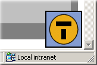
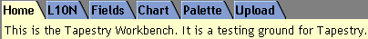

Please select one of the following Tapestry applications from the tutorial:
| Simple | Shows simple dynamic behaviors, on a single page. |
|---|---|
| Hangman | Basic implementation of the game of Hangman. Guess letters one at a time until you run out of guesses, or determine the secret word. More advanced use of forms, as well as a Direct inside a Foreach. |
| Border | 
An example of a useful, reusable component, a common navigation border for a set of pages.
In addition, the Tapestry Inspector makes its first appearance. Click the Tapestry icon in the lower left corner of the page to launch a mini-application that allows you to view how a running application is constructed. |
| Portal | An example of how Tapestry can be used to build data-driven Portals. |
| Workbench |  Tapestry Component Workbench, used to show off the use of interesting Tapestry components. |